Italy
Lancia
Founded by racing driver Vincenzo Lancia in 1906, Lancia is famous for its innovations and its rally titles: the Stratos and the Delta won the World Rally Championship many times.
- Founded
- 1906
- Models
- 48
- Generations
- 51
- In production
- 1
- generations
- Photos
- 40
Range
Heritage


All models and generations
39 models, each with all its generations.
In production
Past models
 Lancia Gamma
Lancia Gamma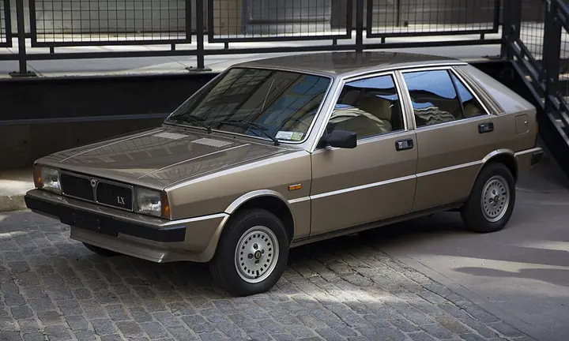
Lancia Delta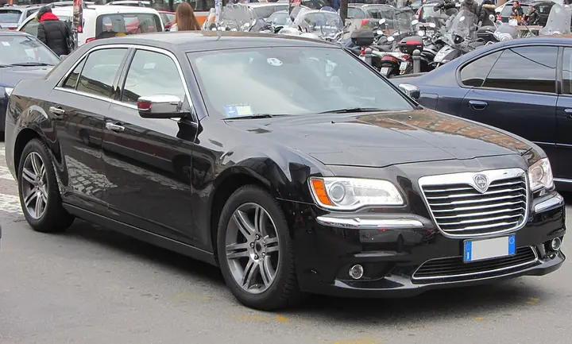
Lancia Thema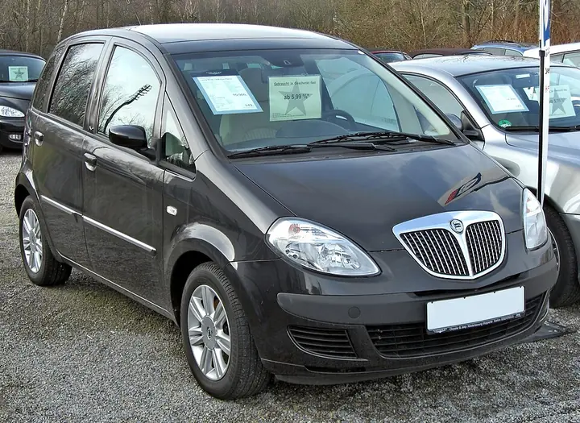
Lancia Musa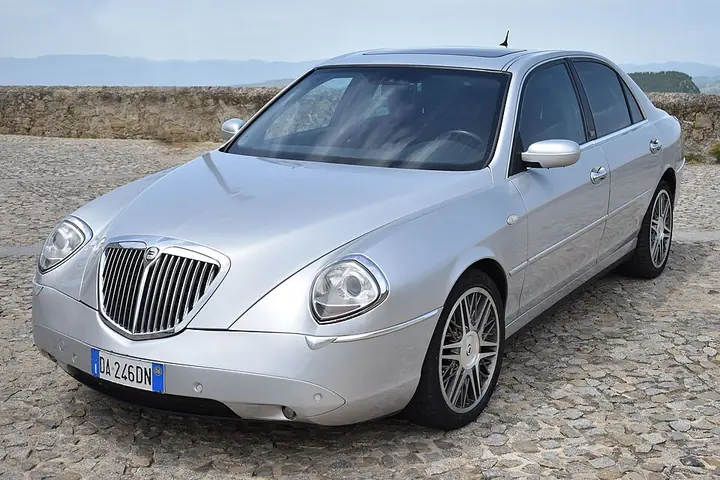
Lancia Thesis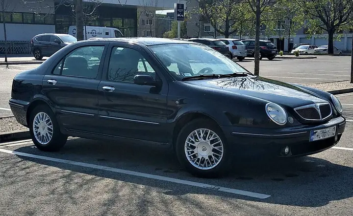
Lancia Lybra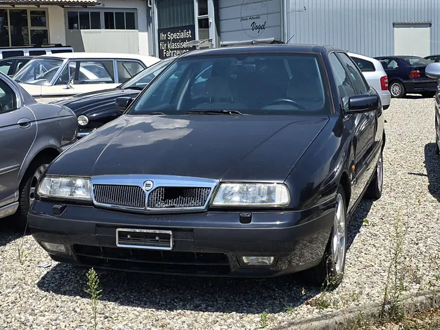
Lancia Kappa Lancia Dedra
Lancia Dedra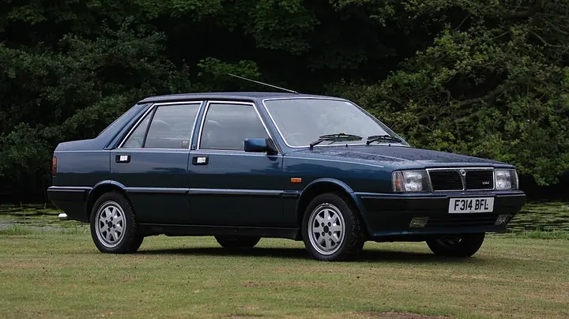
Lancia Prisma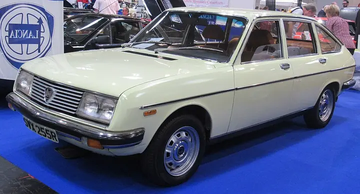
Lancia Beta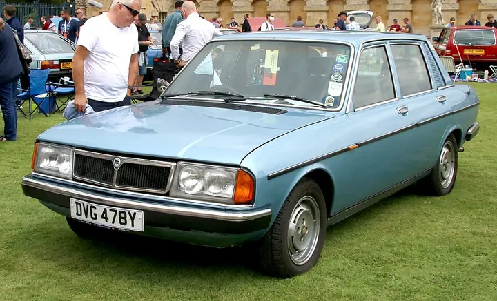
Lancia Trevi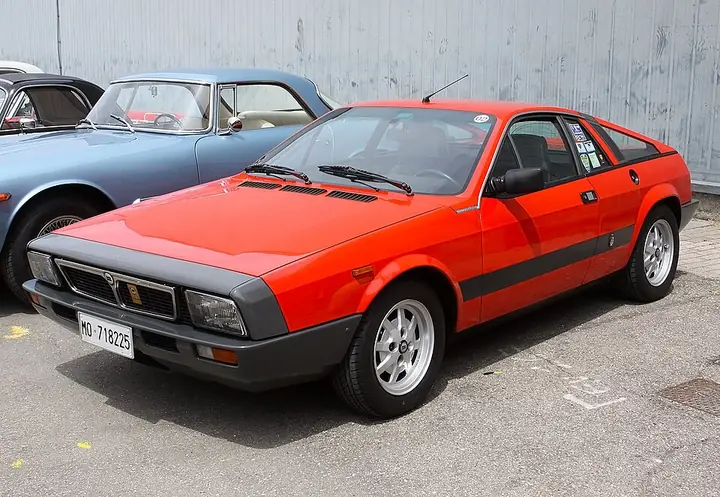
Lancia Montecarlo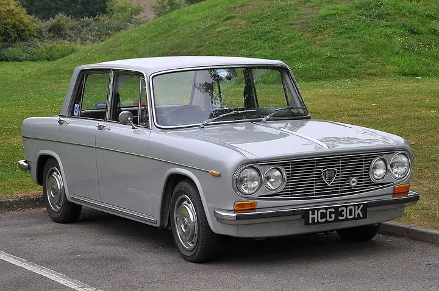
Lancia Fulvia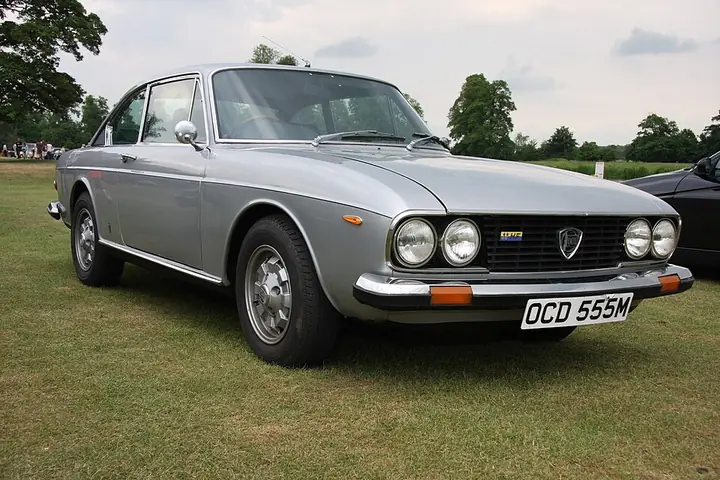
Lancia 2000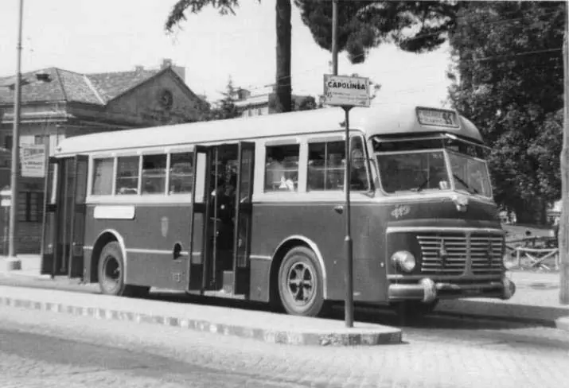
Lancia Esatau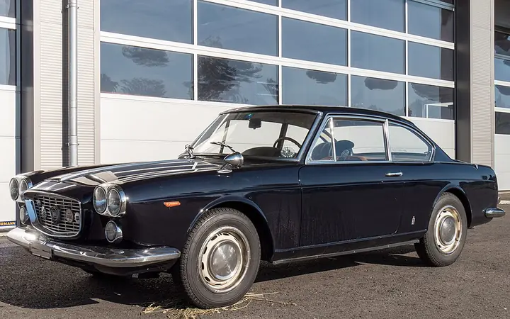
Lancia Flavia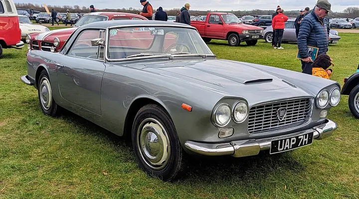
Lancia Flaminia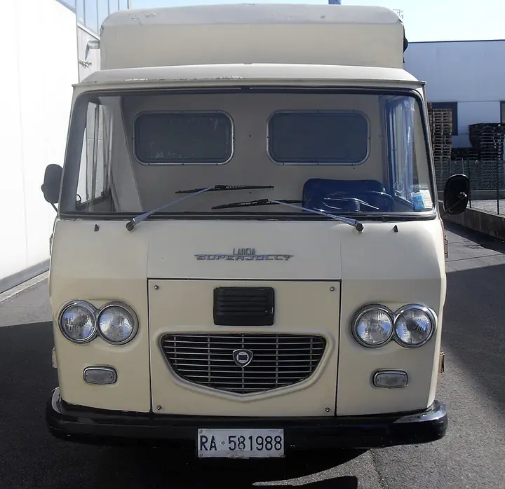
Lancia Superjolly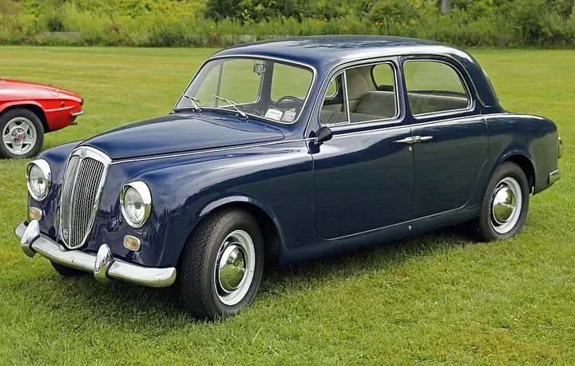
Lancia Appia- Lancia Jolly
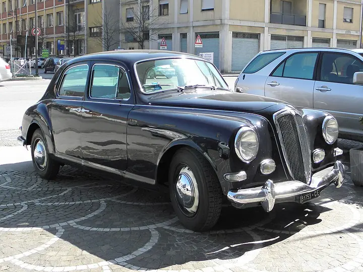
Lancia Aurelia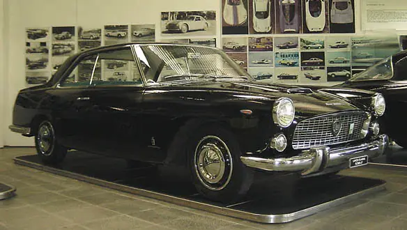
Lancia Florida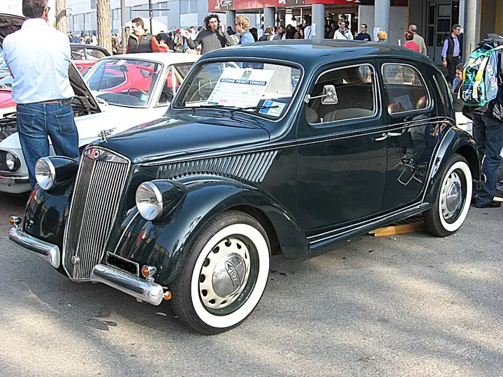
Lancia Ardea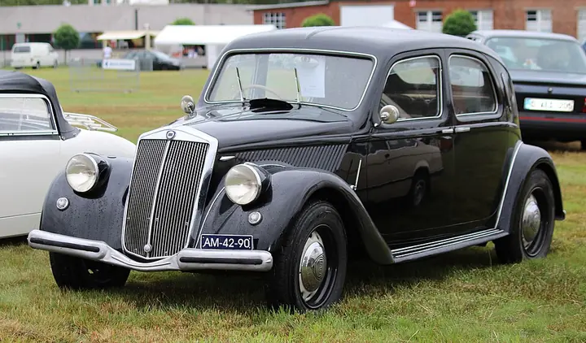
Lancia Aprilia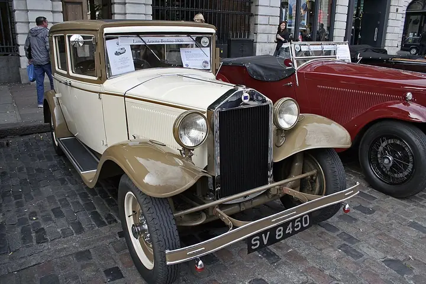
Lancia Artena- Lancia Astura
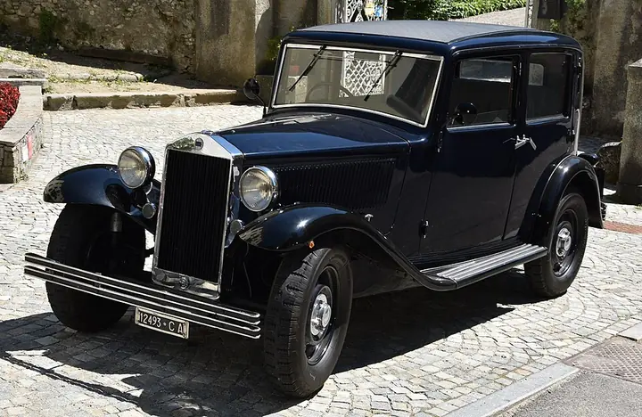
Lancia Augusta- Lancia Dilambda
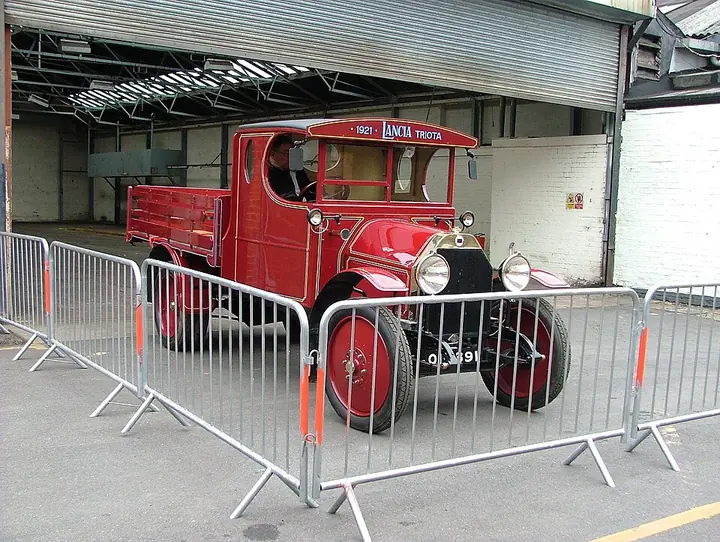
Lancia Jota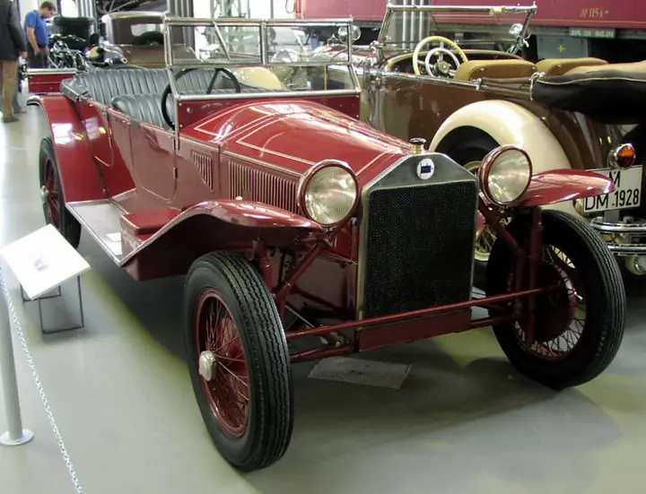
Lancia Lambda- Lancia Trikappa
- Lancia Dikappa
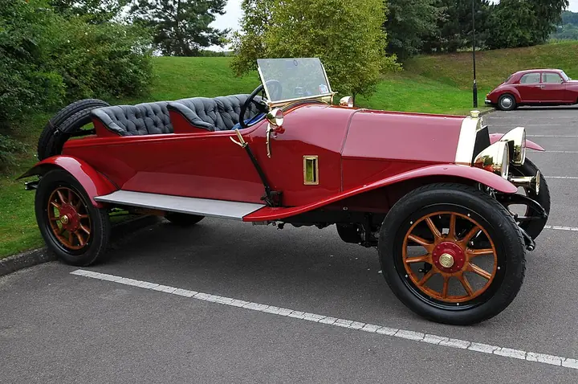
Lancia Theta- Lancia Eta
- Lancia Zeta
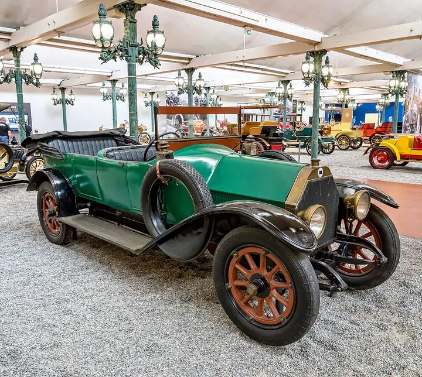
Lancia Epsilon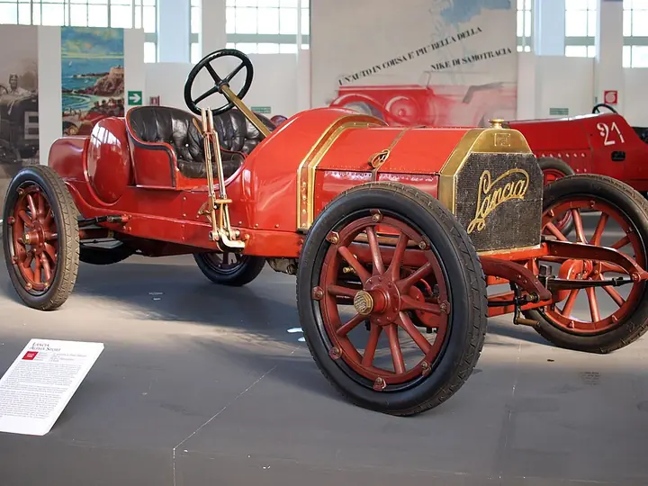
Lancia Alfa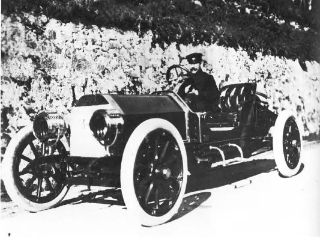
Lancia Dialfa
Racing cars
9 racing cars: Formula One, endurance, rally and touring.
Source: Wikipedia, CC BY-SA 4.0.


_Front_1_(cropped)_(cropped).jpg){kind=link}


.jpg){kind=link}
.jpg){kind=link}